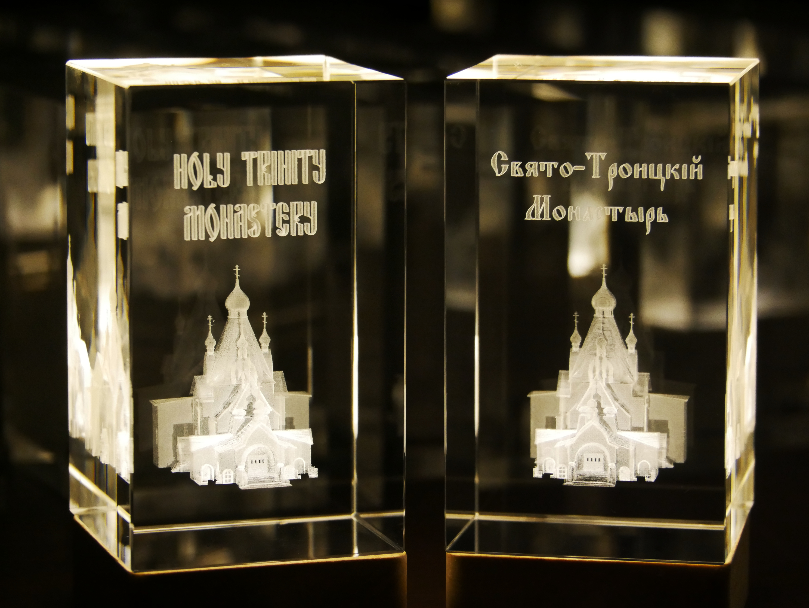
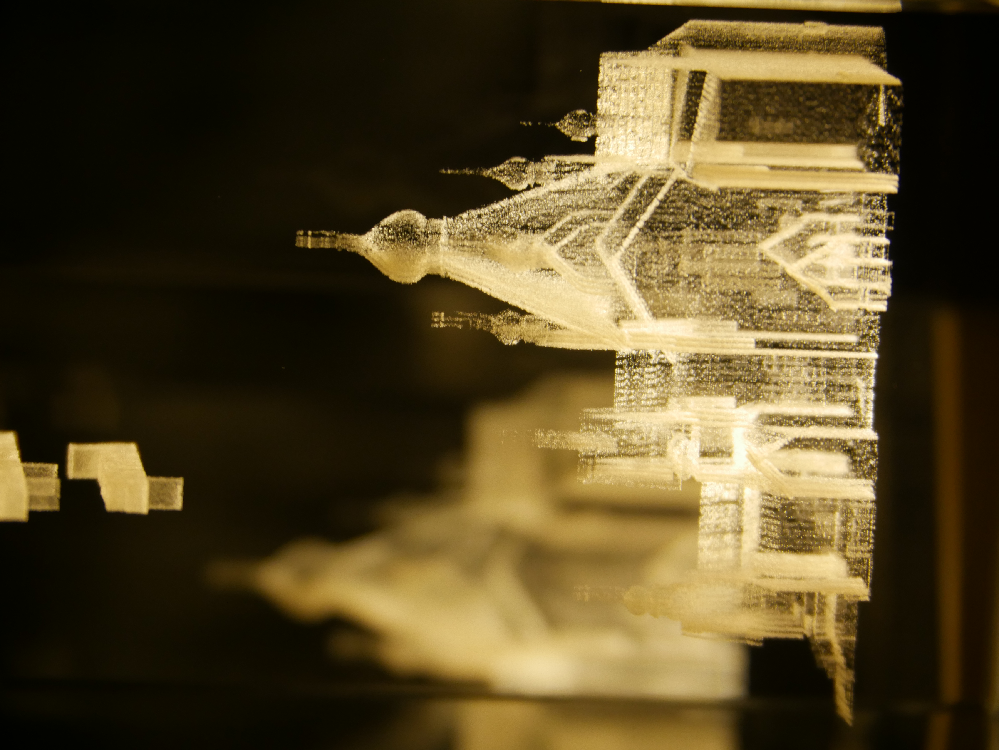
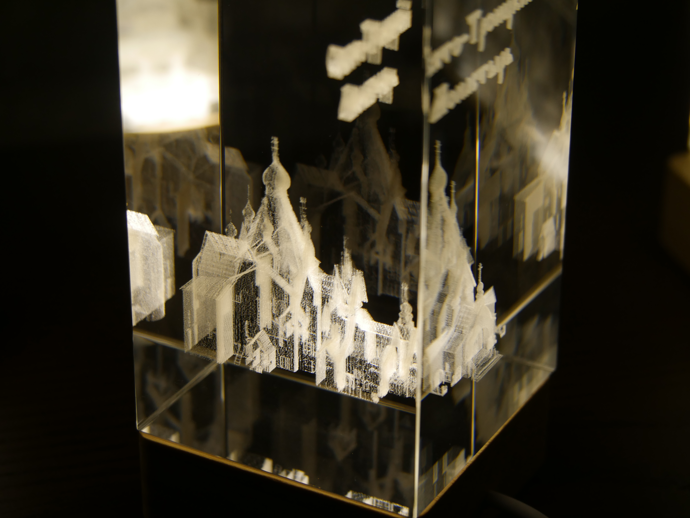
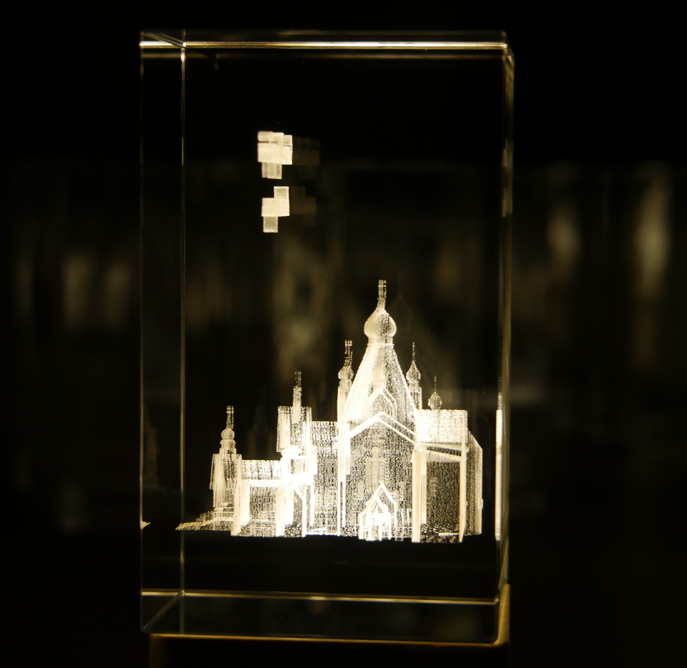

Jordanville, New York
Powerful monastic and spiritual legacy
Holy Trinity Monastery is a major pilgrim destination, spiritual center, and historic site. The monastery is known all over the world in Orthodox Christian circles for its publishing activity in the Cold War period, the seminary on the monastery's grounds, and the many highly influential church leaders and luminaries that lived and worked there. The monastery and seminary have used Eyekonika's glass engravings as gifts for donors, important guests, and offer them for pilgrims to buy in the monastery gift shop.


